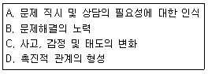
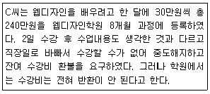
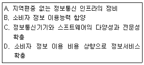
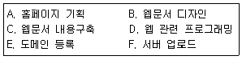
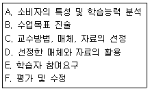
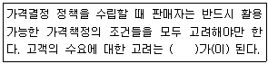
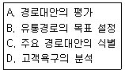
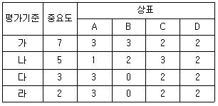

소비자전문상담사-2급 (2012-08-26 기출문제)
1과목: 소비자상담 및 피해구제
1. 소비자상담사의 효율적인 경청이라고 할 수 있는 것은?
- 소비자의 말을 평가적 자세로서 경청하는 평가적 경청
- 상담사 나름대로의 여과장치를 통해 걸러진 내용만을 경청하는 여과적 경청
- 소비자의 불행한 문제에 대해 상담사의 동정을 제공하면서 이루어지는 동정적 경청
- 소비자의 문제에 대해 공감을 할 수 있도록 노력하는 공감적 경청
(정답률: 알수없음)

2. 기업 소비자상담사의 고객 불만처리전략을 제시한 것 중 가장 적절하지 못한 상담전략은?
- 기업의 잘못에 대해서는 소비자의 의견에 공감하면서 정중히 사과한다.
- 불만을 제기하는 소비자의 말을 끝까지 경청한다.
- 불만을 제기한 부분에 대해 적절한 해결방안 및 대안을 제시한다.
- 소비자가 문제를 제기할 때 마다 상담사의 의견을 피력한다.
(정답률: 알수없음)
3. 소비자분쟁해결기준이 소비자보호에 기여한 내용에 관한 설명으로 가장 적합한 것은?
- 별도의 유리한 분쟁해결기준이 있어도 소비자분쟁해결기준을 우선 적용하므로 기여한 바가 매우 크다.
- 법원 판결과 같이 확정적이고 최종적인 의미로서 분쟁해결에 기여한 바가 매우 크다.
- 소비자피해의 사후적 구제과정에서 기여한 바가 매우 크다.
- 소비자피해의 사전예방적 차원에서 기여한 바가 매우 크다.
(정답률: 알수없음)
4. 구객과의 관계 쌀기를 이용한 고객관리 방법으로 가장 부적절한 것은?
- 인터넷 마케팅방법을 활용하여 제품에 대한 정보화 광고문구를 자주 보낸다.
- 정기적으로 여러 가지 정보나 상담지원을 제공한다.
- 적정한 선의 선물을 제공한다.
- 중요 고객 전담 관리 제도를 도입한다.
(정답률: 알수없음)
5. 합리적인 행동스타일을 가지 ㄴ소비자와 상담할 때 가장 적합한 소비자상담 기술은?
- 말하기보다는 듣기를 선호하므로, 정보를 이끌어 내기 위해 개방형 질문을 하는 것이 좋다.
- 개인정보를 주지 않으려고 하므로, 사무적인 대화부터 시작하는 것이 좋다.
- 빨리 말하므로, 말의 속도와 흥분 정도를 맞추는 것이 좋다.
- 힘 있는 어조를 보이므로, 방어적으로 반응하는 것이 좋다.
(정답률: 알수없음)
6. 소비자분쟁해결기준상 품질보증기관과 부품보유기간의 일반적 기준에 대한 설명으로 틀린 것은?
- 품질보증기간과 부품보유기간은 해당 사업자가 품질보증서에 표시한 기간으로 한다.
- 사업자가 품질보증기간과 부품보유기간을 표시하지 아니한 경우에는 품목별 소비자분쟁해결기준을 따른다.
- 중고물품 등에 대한 품질보증기간은 품목별 분쟁해결기준에 따른다.
- 품질보증기간은 소비자가 물품 등을 구입하거나 제공받고 사용하기 시작한 날부터 기산한다.
(정답률: 알수없음)
7. 관여도를 이용한 소비자설득전략에 대한 설명으로 가장 적합한 것은?
- 소비자를 설득하기 위해 제공하는 정보의 기각 및 수용영역의 크기는 관여도에 의해 결정된다.
- 고관여 제품에 대한 소비자상담의 경우 샘플이나 특별 할인 등을 이용하여 일단 제품을 사용하게 한다.
- 고관여 제품을 이용해 소비자를 설득하고자 할 때에는 자연스러운 분위기와 광고 및 캠페인을 활용한다.
- 저관여 제품에 대해 소비자들은 제품관련 정보 및 중심정보에 의해 태도를 형성하게 된다.
(정답률: 알수없음)
8. 소비자상담의 전개과정을 바르게 나열한 것은?

- A→D→B→C
- C→A→B→D
- B→C→D→A
- D→C→A→B
(정답률: 알수없음)
9. 콜센터의 아웃바운드 텔레마케팅에 대한 설명이 옳은 것은?
- 상품수주로 연결되기가 쉽다.
- 상품의 직접 판매에 이용된다.
- 고객으로부터 전화를 수진 받는 텔레마케팅이다.
- 기업 고객상담실에서의 전화상담이 대표적인 예이다.
(정답률: 알수없음)
10. 단호한 태도의 소비자를 대상으로 할 때 소비자상담사가 위해야 할 대응전략과 거리가 먼 것은?
- 소비자가 도착하기 전에 정보와 필요한 양식, 세부적인 사항 및 보증서 등을 미리 준비해둔다.
- 소비자의 질문에 간결하고 직접적이며 사실적인 대답을 하도록 한다.
- 제품이나 서비스와 관련된 소비자의 배경이나 경험에 대해 구체적으로 개방형의 질문을 한다.
- 대안으로 적은 양의 정보를 제공하는 대신 소비자가 말할 기회를 제공하도록 한다.
(정답률: 알수없음)
11. 소비자단체에 의한 소비자상담의 역할로 가장 적합하지 않은 것은?
- 소비자피해구제에 관한 상담뿐 아니라 소비생활전반에 관한 상담을 한다.
- 효율적이 ㄴ해결을 위해 개별소비자와의 개별상담을 지양하고 집단상담에 주력한다.
- 합리적 소비생활을 영위하기 위해 필요한 교육을 실시한다.
- 소비자문제에 관한 정보를 수집하고 이에 관해 정부에 시정을 요구하거나 정책을 건의하는 역할을 한다.
(정답률: 알수없음)
12. 미성년자가 법정대리인의 동의 없이 초고속 인터넷 서비스 사용계약을 체결하였을 때 소비자분쟁 해결기준에서 정하는 보상기준은?
- 손해배상
- 계약취소
- 위약금 50% 지불 후 계약해지
- 위약금 없이 계약해지
(정답률: 알수없음)
13. 소비자상담사의 역할로서 부적합한 것은?
- 소비자 문제를 해결한다.
- 소비생활과 관련된 정보를 제공한다.
- 소비자욕구를 기업에 반영한다.
- 소비자의 심리적 문제를 해결한다.
(정답률: 알수없음)
14. 가구를 구입한 소비자 A씨가 구입일로부터 18개월 후 가구에서 좀 등 벌레가 발생했음을 확인했을 때 소비자분쟁해결기준에 의한 보상기준은?
- 제품교환
- 구입가 환급
- 무상 수리 또는 부품교환
- 제품가의 50% 공제 후 환급
(정답률: 알수없음)
15. 소비자분쟁해결기준의 목적과 성격에 대한 설명으로 틀린 것은?
- 소비자분쟁해결기준은 원칙적으로 사업자에 대한 법적 강제력이 있다.
- 소비자분쟁해결기준의 목적 중 하나는 동일한 내용의 분쟁 시 기관마다 동일한 보상기준을 적용함으로써 공정성을 유지하기 위함이다.
- 소비자분쟁해결기준의 목적은 소비자와 사업자간 분쟁의 원활한 해결을 위함이다.
- 소비자분쟁해결기준은 소비자가 피해로 인한 정신적 손해, 즉 위자료에 대한 기준은 제공하고 있지 않다.
(정답률: 알수없음)
16. 고객의 불만을 잘 처리해서 얻을 수 있는 중요한 장점이 아닌 것은?
- 고객유지율을 증가시켜 이윤을 높일 수 있다.
- 좋지 않은 평판을 미리 막을 수 있다.
- 고객 상담실의 직원을 줄일 수 있어 비용절감 효과가 있다.
- 소송 등으로 인한 법적 비용을 줄일 수 있다.
(정답률: 알수없음)
17. 구매 시 소비자상담원에게 반드시 요구되는 일반적 지식이 아닌 것은?
- 취급상품의 기능, 용도, 사용방법
- 최근 세계경제 동향에 관한 지식
- 관련상품, 근접상품에 대한 지식
- 생산과정이나 제조과정에 대한 지식
(정답률: 알수없음)
18. 다음 사례의 경우 소비자분쟁해결기준에 의해 받을 수 있는 피해보상액은?

- 0원
- 120만원
- 230만원
- 240만원
(정답률: 알수없음)
19. 화가 많이 난 소비자를 대할 때의 상담기술로 가장 적절한 것은?
- 소비자의 감정상태를 인정하는 것은 무조건 문제를 수용하겠다는 것을 의미하게 되므로 삼가야 한다.
- 일단은 소비자를 안심시켜 화가 난 이유를 정확히 말하도록 유도한다.
- 소비자가 이야기할 때 중간에 계속 끼어들어 화를 가라앉히도록 유도한다.
- 상담 초기에 소비자의 감정적인 표현을 무시하여 객관적인 사실만 말하도록 유도한다.
(정답률: 알수없음)
20. 국가나 지방자치단체가 소비자의 불만 및 피해를 처리할 수 있도록 필요한 조치를 강구해야 한다는 의무규정을 두고 있는 것은?
- 소비자분쟁해결기준
- 소비자기본법
- 약관의 규제에 관한 법률
- 민법
(정답률: 알수없음)
21. 소비자단체의 고객 상담실에서 구매 전 상담 시 제품에 대한 정보를 제공하는 목적으로 가장 부적합한 것은?
- 경쟁제품을 비교할 수 있도록 한다.
- 소비자문제 및 피해를 예방한다.
- 소비자의 합리적 구매를 유도한다.
- 선택 가능한 대체 안에 대한 정보를 제공한다.
(정답률: 알수없음)
22. 상담 기관과 해당기관의 소비자상담역할에 대한 설명으로 틀린 것은?
- 기업:소비자가 적절한 보상을 받을 수 있는 바람직한 피해구제방법을 모색한다.
- 소비자단체:흩어져 있는 소비자들을 합하고, 지역사회 발전에 기여하도록 한다.
- 한국소비자원:마지막 피해구제를 받을 수 있는 곳으로 소송을 통한 해결방법을 모색한다.
- 법원:소비자피해구제를 위한 궁극적인 방법으로 사법절차를 통한 해결방법이 있다.
(정답률: 알수없음)
23. 소비자분쟁해결기준에서 정하고 있는 일반적 보상기준에 대한 설명으로 틀린 것은?
- 사업자가 품질보증서에 품질보증기간을 표시하지 아니하였거나 해당 품목에 대한 품질보증기간이 소비자분쟁해결기준에 없는 경우 유사제품의 품질보증기간을 적용한다.
- 서비스의 이용계약 이후 계약해지로 인하여 서비스 이용이 불가능한 경우 환급요건이 된다.
- 할인판매기간에 할인된 가격으로 구입한 제품의 환급은 구입당시의 가격을 기준으로 환급한다.
- 사업자가 손해배상책임이 있고, 보상방법이 여러 가지인 경우 어느 것을 선택할 것인가는 사업자가 결정할 수 있다.
(정답률: 알수없음)
24. 내용증명에 대한 설명으로 틀린 것은?
- 채권양도의 통지가 필요한 때에 필요하다.
- 계약을 해제하려고 할 때 후일의 분쟁을 방지해준다.
- 문서에 확정일자를 부여하고 의사표시 사실에 대한 증거보전이 된다.
- 내용증명의 발송으로 인해 직접적인 법적효력이 발생된다.
(정답률: 알수없음)
25. 일반상담과 달리 소비자상담이 갖는 특성으로 옳은 것은?
- 법적 해결을 최종목표로 한다.
- 주로 방문을 통한 면접형식으로 이루어진다.
- 상담고객의 정서적 지원이 중요시된다.
- 객관적이고 정확한 정보제공을 목적으로 한다.
(정답률: 알수없음)
2과목: 소비자 관련법
26. 다음 중 제조물책임을 지지 않는 자는?
- 택배업자
- 부품 제조업자
- 수입업자
- 완성품 제조업자
(정답률: 알수없음)
27. 할부거래에 관한 법률상 할부거래 시 소비자의 기한이익이 상실되는 경우는?
- 할부금을 다음 지급기일까지 연속 2회 이상 지급하지 않고 연체액이 할부가격의 10/100을 초과한 경우
- 할부금을 다음 지급기일까지 연속 2회 이상 지급하지 않고 연체액이 할부가격의 5/100을 초과한 경우
- 할부금을 다음 지급기일까지 연속 1회 이상 지급하지 않고 연체액이 할부가격의 10/100을 초과한 경우
- 할부금을 다음 지급기일까지 연속 1회 이상 지급하지 않고 연체액이 할부가격의 5/100을 초과한 경우
(정답률: 알수없음)
28. 전자상거래 등에서의 소비자보호에 관한 법률상 공정거래 위원회가 사업자에게 시정조치를 받은 사실의 공표를 명할 때 고려해야 할 사항이 아닌 것은?
- 위반행위의 내용 및 정도
- 위반행위에 대한 사업자의 보상 금액 및 정도
- 위반행위의 기간 및 환수
- 위반행위로 인하여 발생한 소비자 피해의 범위 및 정도
(정답률: 알수없음)
29. 할부거래에 관한 법률상 할부계약에 의한 할부대금채권의 소멸시효는?
- 1년
- 2년
- 3년
- 5년
(정답률: 알수없음)
30. 전자상거래 등에서의 소비자보호에 관한 법률상 전자상거래를 행하는 사업자 또는 통신판매업자의 금지행위가 아닌 것은?
- 허위 또는 과장된 사실을 알리거나 기만적 방법을 사용하여 소비자를 유인 또는 거래하거나 청약철회 등 또는 계약의 해지를 방해하는 행위
- 청약철회 등을 방해할 목적으로 주소ㆍ전화번호ㆍ인터넷도메인 이름 등을 변경 또는 폐지하는 행위
- 분쟁이나 불만처리에 필요한 인력 또는 설비의 부족을 상당기간 방치하여 소비자에게 피해를 주는 행위
- 재화 등의 거래에 따른 대금정산을 위하여 허락받은 범위를 넘어 소비자에 관한 정보를 이용하는 행위
(정답률: 알수없음)
31. 방문판매 등에 관한 법령상 방문판매에 관한 설명으로 틀린 것은?
- 방문판매원을 두지 않는 소규모방문판매업자는 공정거래위원회에 신고하여야 한다.
- 방문판매자등은 재화등의 계약을 미성년자와 체결하려는 경우에는 법정대리인의 동의를 받아야 한다.
- 방문판매의 방법으로 재화 등의 구매에 관한 계약을 체결한 소비자는 계약서를 받은 날부터 14일 이내에 그 계약에 관한 청약철회를 할 수 있다.
- 방문판매자 등은 재화등을 반환받은 날부터 3영업일 이내에 이미 지급받은 재화등의 대금을 환급하여야 한다.
(정답률: 알수없음)
32. 할부거래에 관한 법률상 여신전문금융업법에 따른 신용카드회원과 신용카드가맹점 간의 간접할부계약의 경우 소비자가 그 내용을 이해할 수 있도록 표시하여야 할 사항은?
- 재화등의 종류 및 내용
- 할부가격
- 각 할부금의 금액ㆍ지급횟수 및 지급시기
- 계약금
(정답률: 알수없음)
33. 매도인의 하자담보책임에 관한 설명으로 옳은 것은?
- 매수인은 매도인의 담보책임으로 대금감액 또는 손해배상은 청구할 수 있으나 계약을 해제할 수 는 없다.
- 과실로 인하여 하자가 있는 것을 알지 못한 경우에도 하자담보책임을 적용할 수 있다.
- 담보책임을 면하는 특약을 하면 매도인은 알고 고지하지 아니한 사실에 대해서도 책임을 면할 수 있다.
- 경매의 경우에는 매매의 목적물에 하자가 있더라도 하자담보책임이 적용되지 아니한다.
(정답률: 알수없음)
34. 전자상거래 등에서의 소비자보호에 관한 법률에 대한 설명으로 틀린 것은?
- 전자상거래 등에서의 소비자보호에 관한 법률에서는 사업자가 상행위를 목적으로 구입하는 거래에 관하여는 동법의 적용을 배제한다.
- 사업자라 하더라도 사실상 소비자와 같은 지위에서 다른 소비자와 같은 거래조건으로 거래하는 경우에는 전자상거래 등에서의 소비자보호에 관한 법률이 적용된다.
- 전자상거래에서의 소비자보호에 관하여 다른 법률의 규정이 경합하는 경우에는 전자상거래 등에서의 소비자보호에 관한 법률을 우선 적용하며 다른 법률을 적용하는 것이 소비자에게 유리한 경우에도 전자상거래등에서의 소비자보호에 관한 법률을 우선 적용한다.
- 소비자가 이미 잘 알고 있는 약관 또는 정형화된 거래방법에 따라 수시 거래하는 경우로서 총리령으로 정하는 거래의 경우에는 총리령으로 정하는 바에 따라 계약내용에 관한 서면의 내용이나 교부의 방법을 다르게 할 수 있다.
(정답률: 알수없음)
35. 소비자기본법상 공정거래위원회가 소비자정책위원회의 심의ㆍ의견을 거쳐 수립하는 소비자정책에 관한 기본계획의 수립주기는?
- 1년
- 3년
- 5년
- 10년
(정답률: 알수없음)
36. 다음 중 표시ㆍ광고의 공정화에 관한 법률상 표시ㆍ광고에 관한 공정거래위원회의 행정조치가 아닌 것은?
- 임시중지명령
- 시정조치
- 피해구제 명령
- 과징금 부과
(정답률: 알수없음)
37. 표시ㆍ광고의 공정화에 관한 법률상 부당한 표시ㆍ광고 행위에 해당되지 않는 것은?
- 다른 사업자의 상품에 대한 국가검증기관의 발표내용 중 불리한 사실만을 골라 비방하는 표시ㆍ광고
- 사실은폐, 축소광고 등의 방법에 의한 표시ㆍ광고
- 비교대상 및 기준을 명시하지 않고 비교하는 표시ㆍ광고
- 소비자를 오인시킬 우려는 없으나 일부 사실만을 반복, 강조하는 표시ㆍ광고
(정답률: 알수없음)
38. 소비자기본법상 결함정보의 보고의무제도에서 중대한 결함의 내용을 보고하여야 하는 사업자에 해당하지 않는 자는?
- 물품등을 제조ㆍ수입 또는 제공하는 자
- 물품에 성명ㆍ상호 등을 부착함으로써 자신을 제조자로 표시한 자
- 유통산업발전법 시행령 제3조에 따른 대형마트ㆍ백화점ㆍ쇼핑센터 등 유통사업자
- 소규모 소매업자
(정답률: 알수없음)
39. 소비자기본법에서 규정하고 있는 사업자의 책무 등이 아닌 것은?
- 소비자 권익증진과 관련된 업무의 추진에 필요한 자료 및 정보제공 요청에 대한 협력
- 물품등을 제공함에 있어서 환경친화적인 기술의 개발과 자원의 재활용을 위하여 노력
- 국가 및 지방자치단체의 소비자권익증진 시책에 협력
- 소비자피해보상기구의 설치의무
(정답률: 알수없음)
40. 할부거래에 관한 법령상 사용 또는 소비에 의하여 그 가치가 현저히 낮아질 우려가 있어 소비자가 할부계약에 의한 청약의 철회를 할 수 없는 재화에 해당하지 않는 것은?
- 선박법에 따른 선박
- 항공법에 따른 항공기
- 자동차관리법에 따른 자동차
- 의료기기법에 따른 의료기기
(정답률: 알수없음)
41. 약관의 규제에 관한 법률에서 명시적으로 규정한 목적에 해당하지 않는 것은?
- 소비자 보호
- 국민생활을 균형 있게 향상시키는 것
- 불공정한 내용의 약관을 규제함으로써 건전한 거래질서확립
- 공정하고 자유로운 경쟁을 촉진시키는 것
(정답률: 알수없음)
42. 방문판매 등에 관한 법령상 소비자의 범위에 해당하지 않는 자는?
- 재화 등을 최종적으로 사용하거나 이용하는 자
- 방문판매업자와 거래하는 경우의 방문판매원
- 다단계판매원이 되기 위하여 다단계판매업자로부터 재화등을 최초로 구매하는 자
- 원양산업발전법 제6조제1항에 따라 농림수산식품부장관의 허가를 받은 원양어업자
(정답률: 알수없음)
43. 표시ㆍ광고의 공정화에 관한 법률상 사업자가 부당한 표시ㆍ광고행위를 하는 때에 공정거래위원회가 명할 수 있는 시정조치가 아닌 것은?
- 해당 위반행위의 중지
- 시정명령을 받은 사실의 공표
- 정정광고
- 부당이득의 반환
(정답률: 알수없음)
44. 소비자기본법상 한국소비자원의 업무가 아닌 것은?
- 소비자의 불만처리 및 피해구제
- 소비자관련 조례의 제정 및 개정
- 소비자의 권익증진ㆍ안전 및 능력개발과 관련된 교육ㆍ홍보 및 방송사업
- 소비자의 권익증진 및 소비생활의 합리화를 위한 종합적인 조사ㆍ연구
(정답률: 알수없음)
45. 계약의 효력에 관한 설명으로 옳은 것은?
- 만 18세라도 직업이 있는 경우는 부모의 동의 없이 계약을 체결하여도 이를 취소할 수 없다.
- 중요한 부분의 착오로 이루어진 계약이라도 계약을 체결한 이상 그 계약은 취소할 수 없다.
- 한정치산선고를 받은 사람이 법정대리인의 동의를 얻어서 한 계약은 확정적으로 유효하다.
- 방문판매원의 위압적인 자세 때문에 어쩔 수 없이 체결한 계약의 경우 고객은 그 계약을 취소ㅓ할 수 없다.
(정답률: 알수없음)
46. 甲은 친구 乙로부터 1억원을 차용하고 3개월 후에 갚기로 약속하였다. 그런데 甲은 기일이 도과되어도 곤을 갚지 않았다. 이 경우 다음 설명 중 옳은 것은?
- 乙은 기일 도과 후에 甲에 대하여 이행최고를 하여야 비로소 지연이자를 청구할 권리를 가지게 된다.
- 乙이 무이자로 대여한 것이었다면 기일이 도과되어도 지연이자를 청구할 수 없다.
- 乙은 甲이 돈을 같지 않음으로 말미암아 어떠한 손해가 발생하였는지를 증명하지 아니하더라도 甲에 대하여 지연이자를 청구할 수 있다.
- 乙이 이자 월 2%로 대여한 것이었더라도, 기일 도과 후 부터는 연 5%로 대여한 것이었더라도, 기일 도과 후 부터는 연 5%의 법정이율에 따른 지연이자만을 청구할 수 있다.
(정답률: 알수없음)
47. 약관의 규제에 관한 법률상 표준약관에 관한 설명으로 틀린 것은?
- 소비자단체의 요청이 있는 경우 공정거래위원회는 사업자등에 대하여 표준이 될 약관을 마련하여 심사청구할 것을 권고할 수 있다.
- 공정거래위원회는 사업자가 표준이 될 약관 마련 및 심사청구 권고를 받은 날부터 4개월 이내에 필요한 조치를 하지 아니하면 관련 분야의 거래 당사자등의 의견을 듣고 관계부처 협의를 거쳐 표준약관을 마련할 수 있다.
- 공정거래위원회는 표준약관을 공시하고 사업자 등에 사용할 것을 권장할 수 있다.
- 사업자 표준약관과 다른 내용을 약관으로 사용할 경우 공정거래위원회가 고시한 표준약관 표지를 사용해야 한다.
(정답률: 알수없음)
48. 약관조항이 약관의 규제에 관한 법률에 위반되는지의 여부에 관한 심사를 공정거래위원회에 청구할 수 없는 자는?
- 약관의 조항과 관련하여 법률상의 이익이 있는 자
- 소비자기본법에 따라 등록된 소비자단체
- 소비자기본법에 따라 설립된 한국소비자원
- 독점규제 및 공정거래에 관한 법률에 따른 한국공정거래 조정원
(정답률: 알수없음)
49. 방문판매 등에 관한 법률상 다단계판매원이 될 수 있는 자는?
- 국가공무원
- 법인
- 법정대리인의 동의를 받은 미성년자
- 다단계판매업자의 임직원
(정답률: 알수없음)
50. 전자상거래 등에서의 소비자보호에 관한 법률상 통신판매중개업에 대한 설명 중 틀린 것은?
- 통신판매중개는 사이버몰의 이용을 허락하거나 그 밖에 총리령이 정하는 방법에 의하여 거래 당사자간의 통신판매를 알선하는 행위를 말한다.
- 통신판매 거래의 알선 방법에는 자신의 명의로 통신판매를 위한 광고수단을 제공하거나 그러한 광고수단에 자신의 이름은 표시하여 통신판매에 관한 정보의 제공이나 청약의 접수 등 통신판매의 일부를 수행하는 것도 포함된다.
- 통신판매중개의뢰자(사업자의 경우로 한정한다)는 통신판매중개자의 고의 또는 과실로 소비자에게 발생한 재산상 손해에 대하여 통신판매중개자의 행위라는 이유로 면책된다.
- 통신판매중개자는 통신판매의 중개를 의뢰한 사업자의 성명, 주소, 전화번호 등의 사항을 확인하여 청약이 이루어지기 전까지 소비자에게 제공하여야 한다.
(정답률: 알수없음)
3과목: 소비자 교육 및 정보제공
51. 타일러(Tyler)가 말한 소비자교육 프로그램의 목표를 달성하기 위하여 내용을 설계할 때 고려해야 할 원리가 아닌 것은?
- 신속성
- 계속성
- 계열성
- 통합성
(정답률: 알수없음)
52. 제품사용설명서의 제작원칙에 부합되지 않는 것은?
- 제작자의 입장과 소비자 그리고 판매자 입장을 동시에 고려하는 것이 가장 중요하다.
- 제품의 구조와 성능에 대한 이해를 극대화시킨다.
- 편집과 인쇄의 질을 높여 제품에 대한 이미지를 제고한다.
- 간결하고 전달력이 뛰어난 그래픽 처리를 한다.
(정답률: 알수없음)
53. 소비자 정보 격차에 대한 대응 정책 방향으로 옳은 것은?

- A, B
- B, D
- C, D
- A, C
(정답률: 알수없음)
54. 전자상거래는 기존의 거래와는 확연히 구분되는 특징을 가지고 있다. 이런 특징들은 오프라인의 실물거래와 비교할 때 점재적인 장점과 단점을 동시에 가지고 있다. 다음 중 전자상거래의 장점이라고 할 수 없는 것은?
- 소비자들에게 시간, 장소 등 물리적 제약에서 벗어나 구매를 가능하게 한다.
- 적은 자본으로도 창업이 가능하고 점포구축 및 판촉 등과 관련된 창업과정이 간편하다.
- 다수의 소비자 개인정보를 확보할 수 있어 마케팅전략을 잘 펼칠 수 있고 소비자입장에서도 마케팅의 혜택을 잘 받을 수 있다.
- 결제업자에게는 현금이동이 최소화되고, 전자데이터에 의한 일원적 관리가 가능해져 사무, 회계비용이 대폭 절감된다.
(정답률: 알수없음)
55. 소비자교육 프로그램의 평가와 관련하여 바르게 설명되지 않은 것은?
- 소비자교육 프로그램의 목적과 관련하여서는 교육의 방향이 명확히 제시되었는가를 파악한다.
- 소비자교육 프로그램의 내용구성과 관련하여서는 참신하면서도 실용성 있는 내용이었는가를 평가한다.
- 교육사례의 진행과 관련하여서는 자료의 준비와 활용이 잘 되었는가를 평가한다.
- 소비자의 반응과 관련하여서는 교육대상이 되는 소비자의 지적 수준이 적절하였는지를 평가한다.
(정답률: 알수없음)
56. 다음 중 저소득층 소비자에 대한 정보제공 방법으로 적합하지 않은 것은?
- 저소득층 소비자는 정보원으로서 문서를 잘 활용하지 않기 때문에 구두설명을 하거나 실제자료를 활용한다.
- 저소득층 소비자는 정보획득에 투자할 시간과 비용의 여유가 없기 때문에 복지회관, 직장단위의 무료 정보 제공이나 반상회 등을 통한 정보 제공이 바람직하다.
- 저소득층 소비자들에게 꼭 필요한 정보만을 수집하여 문서로 제작한 자료물을 제공하는 것이 가장 효율이다.
- 저소득층 소비자들에게는 TV나 라디오 같은 대중매체를 통해 정보를 제공하는 것이 효과적이다.
(정답률: 알수없음)
57. 인터넷 웹페이지에서 소비자정보를 검새하고자 한다. 웹페이지에 있는 정보들을 각종 영역별로 분류하고 대항목에서 소항목까지 여러 단계를 거쳐 정보를 찾아가는 계층적인 접근구조를 제공하는 검색방법은?
- 웹 인덱스 방식
- 웹 디렉토리 방식
- 키워드 방식
- 메타형(통합형) 방식
(정답률: 알수없음)
58. 다음 중 기업에서 소비자관련 정보를 활용하는 방안으로 적합하지 않은 것은?
- 상품의 생산기술을 선정할 때 활용한다.
- 공략 소비자층 및 공략방법을 결정할 때 활용한다.
- 미래 소비패턴을 예측할 때 활용한다.
- 신상품을 계획할 때 활용한다.
(정답률: 알수없음)
59. 개인의 입장에서 본 소비자교육의 효과가 아닌 것은?
- 선택에 관한 비판적인 사고능력을 개발하고 촉진할 수 있게 된다.
- 구매를 잘하는 것이 기술이라는 틀을 뛰어넘어 세계의 시민으로서 함께 살아가는데 동참하는 능력을 개발할 수 있게 된다.
- 현재의 자신과 미래의 후손을 위하여 생활을 질을 개선하고 향상시킬 수 있게 된다.
- 소비자정책과 소비자기본법을 효과적으로 시행할 수 있게 된다.
(정답률: 알수없음)
60. 기업에서 발신하는 모든 정보를 총괄적으로 관리하여 소비자 구매 행동시 그 정착된 이미지가 발휘되어 자사제품의 구매로 연결되도록 하는 것은?
- 고객만족 경영
- 고객관계 경영
- 소비자정보관리시스템 구축
- 기업이미지 통합
(정답률: 알수없음)
61. 다음 중 가장 단계적이고 체계적으로 실시할 수 있고, 교육의 사회적 형평성도 살릴 수 있는 소비자교육 형태는?
- 학교소비자교육
- 가정소비자교육
- 소비자단체의 소비자교육
- 한국소비자원의 소비자교육
(정답률: 알수없음)
62. 가정에서의 소비자교육에 대한 설명으로 바람직하지 않는 것은?
- 가정에서 아동기부터, 건전한 소비습관을 길러야 한다.
- 용돈 액수 결정 즉 용돈관리지도가 가정소비자교육의 주요 목표이다.
- 소비자사회화 측면에서 가정소비자교육은 중요하다.
- 부모들이 실천해 보여 주는 것이 중요하다.
(정답률: 알수없음)
63. 기업에서 고객들의 불만에 대한 커뮤니케이션을 주로 하는 소비자 상담실 홈페이지를 제작하고자 할 때, 홈페이지 제작과정을 바르게 나열한 것은?

- A→B→C→D→E→F
- A→C→B→D→F→E
- A→F→E→C→B→D
- A→B→D→C→F→E
(정답률: 알수없음)
64. 현대 청소년 소비자의 일반적 특성은?
- 자유재량소비액이 증가하고 있다.
- 금전 지출에 대한 계획성이 높다.
- 부모로부터 완전히 독립된 소비자행동을 한다.
- 가치관이 정립되어 소비욕망을 절제할 수 있다.
(정답률: 알수없음)
65. 소비자교육 프로그램을 평가하는 올바른 자세가 아닌 것은?
- 프로그램 평가는 문제를 발견, 진단, 치료하는 활동은 물론 예방하는 활동까지 포함해야 한다.
- 프로그램 평가는 프로그램의 목적 및 수행방향뿐만 아니라 진도와 속도까지도 고려해서 행해져야 한다.
- 프로그램 평가는 가치판단은 배제하고, 순수한 경험적ㆍ실증적 접근에 의해서 행해져야 한다.
- 프로그램의 평가는 지속적으로 종합적으로 이루어져야 한다.
(정답률: 알수없음)
66. 조사대상인 개인 또는 사회집단의 행동이나 사회현상을 현장에서 직접 보거나 들어서 필요한 정보나 상활을 알아내는 소비자조사기법은?
- 델파이법
- 관찰조사법
- 면접조사법
- 설문조사법
(정답률: 알수없음)
67. 소비자교육방법을 선정할 때 고려할 원리가 아닌 것은?
- 효율성의 원리
- 계속성의 원리
- 현실성의 원리
- 다양성의 원리
(정답률: 알수없음)
68. 인터넷을 활용한 소비자 정보검색이 주는 장점이 아닌 것은?
- 정보가 매우 정확하다.
- 신속하고 충분한 소비자 정보교환을 가능하게 한다.
- 각종 정보의 비교 검토가 용이하다.
- 적은 시간과 노력으로 정보탐색을 효과적으로 수행할 수 있다.
(정답률: 알수없음)
69. 소비자정보 제작 시 소비자정보 내용의 선정원칙이 아닌 것은?
- 제공정보의 중요성
- 정보의 흥미성과 참신성
- 교육적 효용성
- 정보의 일반성
(정답률: 알수없음)
70. 소비자교육 내용을 결정할 때 소비자가 속해있는 사회와 경제시스템을 이해라고 그 시스템의 기능을 수행하는데 필요한 수비자 역할에 초점을 맞추는 접근방식을 무엇이라 하는가?
- 발달적 접근방법
- 공공정책 접근방법
- 능력별 접근방법
- 역사적 접근방법
(정답률: 알수없음)
71. 민간소비자단체의 일반적 업무와 가장 거리가 먼 것은?
- 소비자상담
- 출판사업
- 국제적 연계활동
- 기업체 견학
(정답률: 알수없음)
72. 다음 중 소비자에 대한 설명으로 틀린 것은?
- 소비자는 현대사회에서 프로슈머로서의 역할도 하게 된다.
- 소비자는 재화와 용역의 구매자이다.
- 소비자라 함은 개인소비자로서 역할만을 의미한다.
- 소비자는 민주시민으로서의 역할도 담당한다.
(정답률: 알수없음)
73. 소비자재무관리와 관련된 정보제공 시 고려해야 할 사항과 가장 거리가 먼 것은?
- 소비자의 경제적 자원을 효율적으로 관리하는데 필요한 정보를 제공해야 한다.
- 소비자들을 대상별로 구별하지 않고 소비자재무관리와 관련된 정보를 제공해야 한다.
- 복잡한 경제환경에 처한 소비자들이 재무관리에 필요한 지식을 습득할 수 있도록 해야 한다.
- 부유층뿐만 아니라 서민들도 손쉽게 이용할 수 있는 소비자재무상담서비스도 포함되어야 한다.
(정답률: 알수없음)
74. 소비자교육 프로그램을 설계하는 일반적인 과정을 바르게 나열한 것은?

- A→B→C→D→E→F
- A→C→D→B→E→F
- A→E→B→C→D→F
- A→B→E→C→D→F
(정답률: 알수없음)
75. 소비자교육을 위한 요구분석(need assessment)의 필요성과 가장 거리가 먼 것은?
- 소비자교육에 대한 교육적 요구를 파악하고 우선순위를 결정할 수 있다.
- 소비자의 동기유발이 가능하게 되며, 소비자교육 참여도를 높일 수 있다.
- 소비자가 인식하지 못한 교육내용은 다루지 않음으로써 시간을 절약할 수 있다.
- 소비자 집단이 동질적이지 못한 경우 공유된 가치를 전달할 수 있다.
(정답률: 알수없음)
4과목: 소비자와 시장
76. 소비자행동에 대한 행동과학적 접근방법에 대한 설명으로 틀린 것은?
- 사회학, 심리학, 경제학 등의 접근방법을 통합하여 발전되었다.
- 제변수나 변수간 관계는 상당 부분 행동과학에서 발전된 이론에 토대를 두고 있다.
- 대표적 모델로서 니코시아모델, 하워드-쉐스모델, 엥겔모델은 의사결정과정에 초점을 둔다.
- 소비자행동에 대한 정보처리적 접근방법으로부터 많은 영향을 받아 형성되었다.
(정답률: 알수없음)
77. 다음 ()안에 알맞은 것은?

- 변동비
- 원가경쟁
- 가격의 범위
- 가격상한선
(정답률: 알수없음)
78. 일반적인 유통경로 설계과정을 바르게 나열한 것은?

- A→B→C→D
- B→C→A→D
- C→B→D→A
- D→B→C→A
(정답률: 알수없음)
79. 관여수준이 높은 경우 다음 중 어떤 구매의사결정을 내릴 가능성이 높은가?
- 확장된(extended) 의사결정
- 일상(nominal) 의사결정
- 감성적(affective) 의사결정
- 제한적(limited) 의사결정
(정답률: 알수없음)
80. 소비자 의사결정의 효율성에 대한 설명으로 가장 적합한 것은?
- 효율성은 최소의 희생으로 최대의 효과를 얻는 경제성을 의미하나, 효율성의 판단은 주관적이다.
- 효율성이란, 주어진 자원 내에서 최대의 소비수준을 획득하는 것으로 경제적 이득이 있는 구매로써 만족이 따르지 않는 소비라도 효율적인 소비에 속한다.
- 구매의사결정 과정에서의 효율성과 결과에서의 효율성을 일치한다.
- 소비자 효율성 측정을 위해서는 구매이득 측정을 위한 경제적 접근과 품질만족측정을 위한 심리적 접근이 병행되어야 한다.
(정답률: 알수없음)
81. 소비자의사결정단계 중 문제 인식에 대한 설명으로 틀린 것은?
- 의사결정과정의 첫 번째 단계로 욕구를 인식함으로써 시작된다.
- 실제 상태와 바람직한 상태간의 차이를 지각하는 것이다.
- 문제 인식의 크기와 중요성에 상관없이 구매의사결정과정이 진행되어 구매로 이어진다.
- 문제 발생이 예상되지도 않고 즉각적으로 해결할 필요가 없는 문제를 점진적은 문제라고 한다.
(정답률: 알수없음)
82. 제품 또는 서비스의 가격을 결정할 때 상대적으로 고가전량이 적합한 경우는?
- 시장수요의 가격탄력성이 높을 때
- 시장에 경쟁자의 수가 많을 것으로 예상될 때
- 진입장벽이 높아 경쟁기업의 진입이 어려울 때
- 원가우위를 확보하고 있어 경쟁기업이 자사 상품의 가격만큼 낮추기 힘들 때
(정답률: 알수없음)
83. 시장의 경쟁구조를 결정하는 요인이 아닌 것은?
- 국가의 경제규모
- 제품의 동질성 정도
- 정부의 역할
- 공급자와 수요자의 수
(정답률: 알수없음)
84. 다음은 대안평가단계에서 소비자가 평가기준의 중요도를 17점으로, 4가지 상표에 대한 평가점수를 0~3점으로 표시한 것이다. 사전편찬식(lexicographic rule)에 따르면 어떤 상표가 선택되는가?

- A
- B
- C
- D
(정답률: 알수없음)
85. 비쌀수록 구매한다는 식의 비합리적 소배행태를 설명하기에 가장 적합한 이론은 무엇인가?
- 베블런효과
- 스놉효과
- 밴드웨건효과
- 트리클다운효과
(정답률: 알수없음)
86. 다음 중 제품구매를 위한 상점 선정의 기준으로 작용하는 요인이 아닌 것은?
- 접근편의성
- 제품구색
- 라이프스타일
- 타인의 소비성향
(정답률: 알수없음)
87. 다음 중 한계효용에 대한 설명으로 옳은 것은?
- 한계효용이 가장 큰 경우는 총 효용이 가장 큰 경우에 해당한다.
- 소비량이 증가함에 따라 한계효용은 증가한다.
- 재화 한 단위를 추가적으로 소비할 때마다 변화하는 총효용의 증가분을 뜻한다.
- 포화점에 도달하면 한계효용은 증가한다.
(정답률: 알수없음)
88. 선망집단의 소비행동을 따라하거나 유행에 지나치게 집착하는 소비의 형태는?
- 과시구매
- 모방구매
- 중독구매
- 충동구매
(정답률: 알수없음)
89. 소비자 구매의사결정 절차를 바르게 나열한 것은?
- 정보탐색→대안평가→구매→문제인식→구매 후 평가
- 대안평가→문제인식→정보탐색→구매→구매 후 평가
- 문제인식→대안평가→정보탐색→구매→구매 후 평가
- 문제인식 →정보탐색→대안평가→구매→구매 후 평가
(정답률: 알수없음)
90. 상표선택이 점포선택보다 우선시되는 경우와 가장 거리가 먼 것은?
- 가격수준이 적당할 때
- 산표애호도가 높을 때
- 점포애호도가 낮을 때
- 제품정보가 충분할 때
(정답률: 알수없음)
91. 다음 중 이상 소비행동과 그 내용이 바르게 연결된 것은?
- 부부싸움을 하고 난 다음날 집에 있기 싫어 충동적으로 외출하여 필요하지도 않는 상품을 마구 구입하면서 스트레스를 풀었다면 이는 충동구매에 해당한다.
- 홈쇼핑 채널을 통해서 필요하지도 않은 물건을 쇼핑을 하면서 불만을 해소하거나 대리만족을 느낀다면 이는 과시소비에 해당한다.
- 아동복을 사러 백화점에 가서 쇼핑하는 중에 쇼윈도우에 전시된 어른 원피스를 구입하였다면 충동구매에 해당한다.
- 자신의 필요에 의해서가 아니라 다른 사람에게 드러내 보이기 위해 낭비적 소비를 한다면 이는 보상소비에 해당한다.
(정답률: 알수없음)
92. 지속 가능한 소비에 관한 설명으로 틀린 것은?
- 지속 가능한 소비를 통해서 소비자에게는 동일한 최적 수준의 서비스를 제공하면서 환경파괴와 지원낭비를 감소시키는 것이 목적이다.
- 과거의 이상적인 소비수준을 현재까지 유지할 수 있는 소비를 의미한다.
- 미래 세대의 요구를 희생시키지 않고 현 세대의 욕구를 충족시키는 소비를 의미한다.
- 18994년 오슬로 심포지엄에서는 의미를 구체화하였다.
(정답률: 알수없음)
93. 다음 중 마케팅 믹스 전략에 해당하지 않는 것은?
- 제품기능과 포장에서의 제품차별화 전략
- 시장진입을 위한 적정한 기격전략
- 광고와 인적판매를 통한 판매촉진전략
- 고객세분화에 이한 시장진입과 퇴출전략
(정답률: 알수없음)
94. 소비행동의 유형인 보상소비에 대한 설명으로 옳은 것은?
- 스트레스, 실망, 좌절 및 자아존중감 결핍이 원인이 되어 나타나는 소비
- 지위상품을 다른 사람에게 보이기 위한 욕망으로 이루어지는 소비
- 자극이 고조되어 즉각적으로 이루어지는 소비
- 지나치게 구매에 이끌려 억제하지 못하는 특성을 가진 소비
(정답률: 알수없음)
95. 소비자 구매행동의 영향요인 중 외부환경적 요인이 아닌 것은?
- 문화
- 준거집단
- 사회계층
- 태도
(정답률: 알수없음)
96. 다음 중 특성이론에 대한 설명으로 틀린 것은?
- 소비자가 상품이 아닌 상품의 속성이나 특성으로부터 효용을 얻는다고 보는 시각이다.
- 전통적인 소비자수요이론과는 달리 예산조건에 의해 제약받지 않는 최적선택을 설명한다.
- 랭커스터(Lancaster)라는 학자에 의해 제기된 이론이다.
- 특성이론에서 효율곡선(efficiency frontier)은 주어진 예산으로 최대의 특성치를 얻을 수 있는 점들을 연결한 선이다.
(정답률: 알수없음)
97. 다음 중 기업의 판매증가를 위한 마케팅 전략에 해당하지 않는 것은?
- 후원사업
- 현금거래촉진 전략
- 단수가격
- 매장내 음악 선별
(정답률: 알수없음)
98. 다음 중 소비자 자신이 포함되어 있지는 않지만, 자신이 소속되기를 바라는 집단을 무엇이라 하는가?
- 열망집단
- 회피집단
- 준거집단
- 회원집단
(정답률: 알수없음)
99. 환경문제의 특징에 대한 설명으로 옳지 않은 것은?
- 인과관계의 시차성
- 문제의 자기중심적
- 배타성과 경합성
- 오염요인간의 상승작용
(정답률: 알수없음)
100. 문화 또는 소비문화에 대한 설명으로 틀린 것은?
- 공통된 부류 내에서 하위적으로 갖는 공통된 부류를 하위문화라고 한다.
- 문화는 소비자구매 의사결정과정에 영향을 미치는 요인이다.
- 문화는 기업의 상품개발, 판매전략 등에 중요한 요인으로 활용된다.
- 소비자의사결정에서 하위문화 보다는 전체적인 차원의 문화가 좀 더 중요하게 생각된다.
(정답률: 알수없음)